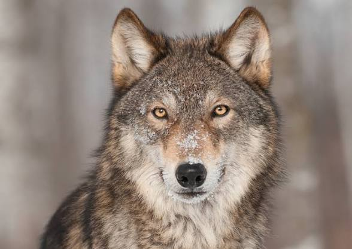

Wolves are among the most iconic and misunderstood animals on the planet. As apex predators, they play a vital role in maintaining the balance of ecosystems wherever they roam. A wolf's life is deeply social, centred around a family unit known as a pack, which typically consists of a breeding pair and their offspring from several seasons. The pack works together to hunt large prey such as elk, moose, and bison, using coordinated strategies that demonstrate remarkable intelligence and teamwork. Wolves communicate through a rich combination of howling, body language, facial expressions, and scent marking. A howl can carry over distances of up to ten kilometres and serves many purposes, from rallying the pack before a hunt to warning rival packs to stay away from their territory. Wolf pups are born blind and helpless and rely entirely on their parents and older siblings for food and protection during their first weeks of life. By the time they are a few months old they begin to explore, play, and learn the complex social rules of pack life. Wolves have an extraordinary sense of smell, estimated to be roughly one hundred times more powerful than that of a human, which they use to track prey across vast distances even through snow and dense forest. Their stamina is equally impressive; a wolf can trot at around eight kilometres per hour for hours on end and sprint at up to sixty kilometres per hour when closing in on prey. Despite centuries of persecution and habitat loss, wolf populations have made remarkable recoveries in parts of Europe and North America thanks to dedicated conservation programmes. The reintroduction of wolves to Yellowstone National Park in 1995 became one of the most celebrated conservation success stories in history, triggering a cascade of ecological changes that restored rivers, forests, and entire species communities through a process scientists call a trophic cascade.
Wolves have long held a powerful place in human mythology and culture, appearing as symbols of both fear and strength across countless civilisations. In Norse mythology, the giant wolf Fenrir was seen as a force powerful enough to threaten the gods themselves. Native American cultures have traditionally regarded the wolf with deep respect, viewing it as a teacher, a guide, and a symbol of loyalty and endurance. Today, as attitudes toward wildlife shift toward coexistence rather than conflict, the wolf is increasingly seen as a symbol of wild nature worth protecting.